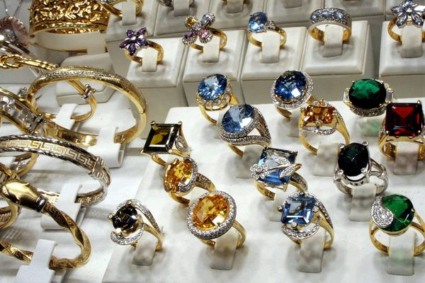

Vous avez besoin des pagnes en urgence ou d'une assistance par des conseils et devis ? Nous vous proposons nos solutions dans les plus brefs délais.
PLUS D'INFOS
ENTREPRISE
MENUISIER
Pas de panique, vous n’êtes pas en train de vous faire assigner... Les huisseries, incontournables dans une construction, sont l’apanage des menuisiers. Ce sont tout simplement les éléments qui forment l’encadrement et les ouvrants des portes et des fenêtres. Ils sont généralement en bois, en pvc ou en métal. On appelle « dormant » la partie de menuiserie fixe (l’encadrement d’une fenêtre par exemple). Par opposition, l’ouvrant en constitue la partie mobile.
PLUS D'INFOS
ENTREPRISE
FORFAITS DE POSE
Les coiffeurs et coiffeuses sont les spécialistes du soin, de l'esthétique et de l'hygiène du cheveu. De la coupe au brushing, en passant par la vente de produits et le nettoyage du salon, des missions qui décoiffent !
PLUS D'INFOS

ENTREPRISE
BIJOUTERIE
Le bijoutier-joaillier détermine la forme du bijou. Il choisit les matériaux et les pierres avant de tracer une ébauche, le plus souvent par ordinateur. Ces éléments lui permettent d'estimer le coût de fabrication du bijou. Lors de la phase d'exécution, il prépare le métal et les pierres, puis façonne les pièces.
PLUS D'INFOS
4 Raisons clés de choisir Mon Artisan
DISPONNIBILITE
Nous consacrons des professionnels certifiés pour répondre à vos besoins préventifs et à vos demandes ponctuelles 24H/24.
QUALITE GARANTIE
Tous nos professionnels sont sélectionnés, contrôlés et certifiés, en fonction de leurs compétences et de leurs expériences ; Leur travail est couvert par une garantie.
SOLUTION TOUT EN UN
En plus du nettoyage et de la maintenance préventive, nous gérons de manière réactive tous vos dépannages urgents, ainsi que vos besoins de mises à niveau.
SUR MESURE POUR VOUS
Un key Account Manager formé au Facility Management et à la gestion relationnelle vous est spécialiament dédié pour vous accompagner de A à Z.